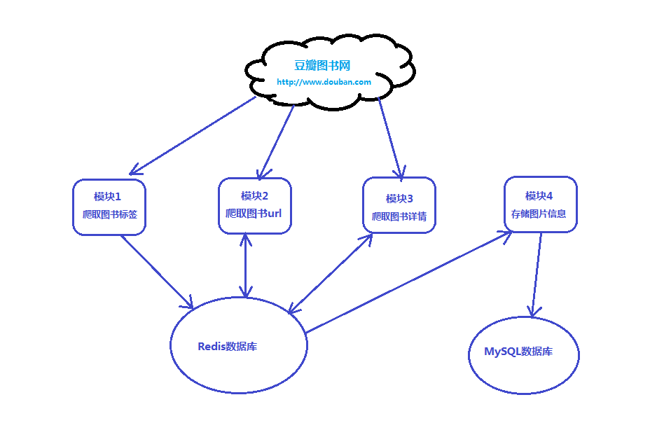

24. 爬虫项目架构设计
1. 数据库设计：
- 为了方便后续的数据处理，将所有图书信息都汇总的一张数据表中。
- 创建数据库：
doubandb - 进入数据库创建数据表：
books - 表中字段：
[
ID号、书名、作者、出版社、原作名、译者、出版年、页数、
定价、装帧、丛书、ISBN、评分、评论人数
]
- 数据表结构：
CREATE TABLE `books` (
`id` bigint(20) unsigned NOT NULL COMMENT 'ID号',
`title` varchar(255) DEFAULT NULL COMMENT '书名',
`author` varchar(64) DEFAULT NULL COMMENT '作者',
`press` varchar(255) DEFAULT NULL COMMENT '出版社',
`original` varchar(255) DEFAULT NULL COMMENT '原作名',
`translator` varchar(128) DEFAULT NULL COMMENT '译者',
`imprint` varchar(128) DEFAULT NULL COMMENT '出版年',
`pages` int(10) unsigned DEFAULT NULL COMMENT '页数',
`price` double(6,2) unsigned DEFAULT NULL COMMENT '定价',
`binding` varchar(32) DEFAULT NULL COMMENT '装帧',
`series` varchar(128) DEFAULT NULL COMMENT '丛书',
`isbn` varchar(128) DEFAULT NULL COMMENT 'ISBN',
`score` varchar(128) DEFAULT NULL COMMENT '评分',
`number` int(10) unsigned DEFAULT NULL COMMENT '评论人数',
PRIMARY KEY (`id`)
) ENGINE=InnoDB DEFAULT CHARSET=utf8
2. 项目结构：
- 本次项目设计分为四个模块，如下图所示：

说明：
- 模块一：实现豆瓣图书信息所有标签信息的爬取，并图书的标签信息写入到Redis数据库中，此模块可使用rquests简单实现。
- 模块二：负责从Redis中获取每个图书标签，并分页式的爬取每本图书的url信息，并将信息写入到redis中。
- 模块三：负责从Redis中获取每个图书的url地址，并爬取对应的图书详情，将每本图书详情信息写回到redis数据库中。
- 模块四：负责从Redis中获取每本图书的详情信息，并将信息依次写入到MySQL数据中，作为最终的爬取信息。
本次项目结构采用Scrapy-Redis主从分布式架构：
- 主master负责爬取每本图书的url地址（要去重），并将信息添加到Redis的url队列中（模块二）
- 从slave负责从Redis的url队列中获取每本书的url，并爬取对应的图书信息（过滤掉无用数据）（模块三）。